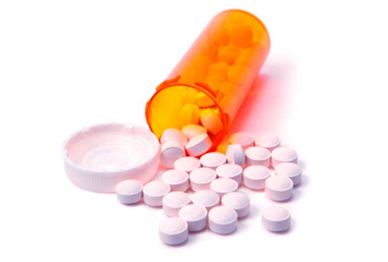

Opioides

Descripción:
Efectos Físicos:
- Características comunes de intoxicación aguda
- Vómito, nausea
- Reducida actividad del sistema nervioso
- Estreñimiento
- Somnolencia y disminución de la consciencia
- Sedación y confusión mental
- Características proco frecuentes de intoxicación aguda
- Sudoración
- Enrojecimiento facial
- Picazón (prurito)
- Resequedad bucal
- Alucinaciones
- Aburrimiento
- Dificultad para orinar (retención urinaria)
- Características inusuales de intoxicación aguda
- Complicaciones asociadas con sobredosis no fatales, p. e., hipoxia causando daño cerebral
- Enfermedad de la materia blanca del cerebro (leucoencefalopatía), resulta de la inhalación de los vapores al procesar la heroína; hay informes esporádicos de casos en la literatura
- Medicamentos recetados
- Unos pocos casos de uso asociado con tramadol muestran el síndrome de la serotonina, una condición potencialmente mortal
- Síndrome de la seorotonina
- Sin efectos adversos psicológicos agudos
- Causa reducidos deterioros psicomoter y cognitivos en los usuarios tolerantes
Presiona en los puntos para conocer los efectos que causa esta droga en tu cuerpo